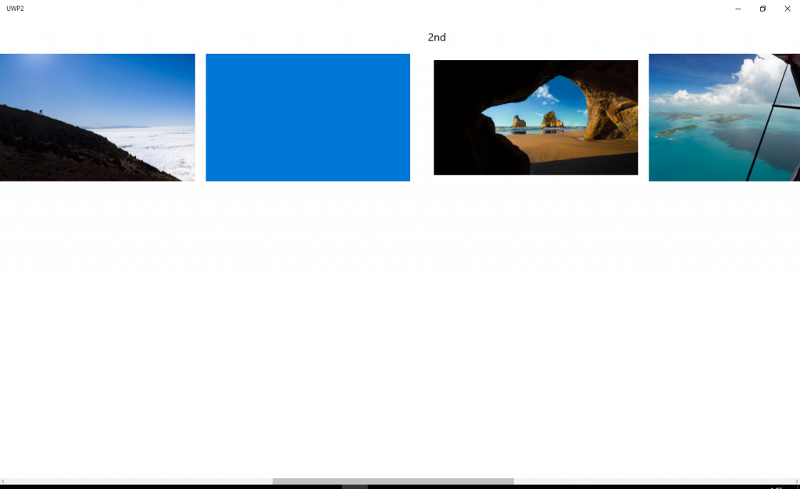

UWP、面倒です。
Problem
Hub というのがあります。 よくModernスタイルを紹介するときにグループ毎にタイルを並べて画面全体をスクロールできるやつ。そのグループがHubSection。 で、そのHunSectionですが、StackPanelを中に入れてOrientationをHorizontalにしても、中の子要素が横に並んでくれません。 HubSection自体のWidthを未指定だろうが、明示的に指定しようが縦になってしまいます。 理由はよくわかりませんでした。 とにかく、仕様として
- グループ単位で可変数の子要素を横に並べる
- グループ内ではスクロールバーは出さない
を満たす必要がありました。
Resolution
解決策として、Gridを可変の子要素に対応させました。 といってもGridを継承するのではなく、UserControl上いGridを載せて、それを依存関係プロパティから操作する感じですが。
Explanation
ソースは下記です。 https://github.com/takuya-takeuchi/Demo/tree/master/UWP1 まず、可変対応のGrid。 [code lang=”csharp”] using System.Collections; using System.Collections.Generic; using Windows.UI.Xaml; using Windows.UI.Xaml.Controls;
// The User Control item template is documented at http://go.microsoft.com/fwlink/?LinkId=234236
namespace UWP2 { public sealed partial class VariableGrid : UserControl {
#region イベント #endregion
#region フィールド #endregion
#region コンストラクタ public VariableGrid() { this.InitializeComponent(); }
#endregion
#region プロパティ
public static readonly DependencyProperty GridLengthProperty = DependencyProperty.Register( “GridLength”, typeof(double), typeof(VariableGrid), new PropertyMetadata(default(double), GridLengthChanged));
public double GridLength { get { return (double)GetValue(GridLengthProperty); } set { SetValue(GridLengthProperty, value); } } private static void GridLengthChanged(DependencyObject dependencyObject, DependencyPropertyChangedEventArgs dependencyPropertyChangedEventArgs) { var control = dependencyObject as VariableGrid; control?.Update(); }
public static readonly DependencyProperty ItemsSourceProperty = DependencyProperty.Register( “ItemsSource”, typeof(object), typeof(VariableGrid), new PropertyMetadata(default(object), ItemsSourceChanged));
public object ItemsSource { get { return (object)GetValue(ItemsSourceProperty); } set { SetValue(ItemsSourceProperty, value); } }
private static void ItemsSourceChanged(DependencyObject dependencyObject, DependencyPropertyChangedEventArgs dependencyPropertyChangedEventArgs) { var control = dependencyObject as VariableGrid; control?.Update(); }
public static readonly DependencyProperty ItemTemplateProperty = DependencyProperty.Register( “ItemTemplate”, typeof(DataTemplate), typeof(VariableGrid), new PropertyMetadata(default(DataTemplate), ItemTemplateChanged));
public DataTemplate ItemTemplate { get { return (DataTemplate)GetValue(ItemTemplateProperty); } set { SetValue(ItemTemplateProperty, value); } }
private static void ItemTemplateChanged(DependencyObject dependencyObject, DependencyPropertyChangedEventArgs dependencyPropertyChangedEventArgs) { var control = dependencyObject as VariableGrid; control?.Update(); }
public static readonly DependencyProperty OrientationProperty = DependencyProperty.Register( “Orientation”, typeof(Orientation), typeof(VariableGrid), new PropertyMetadata(default(Orientation), OrientationChanged));
public Orientation Orientation { get { return (Orientation)GetValue(OrientationProperty); } set { SetValue(OrientationProperty, value); } }
private static void OrientationChanged(DependencyObject dependencyObject, DependencyPropertyChangedEventArgs dependencyPropertyChangedEventArgs) { var control = dependencyObject as VariableGrid; control?.Update(); }
#endregion
#region メソッド
#region プライベート
private void Update() { var grid = this._Grid;
grid.Children.Clear(); grid.RowDefinitions.Clear(); grid.ColumnDefinitions.Clear();
var items = this.ItemsSource as IEnumerable; if (items == null) return;
var itemTemplate = this.ItemTemplate; if (itemTemplate == null) return;
var rowColumn = 0; var gridLength = this.GridLength;
var children = new List
child.DataContext = dataContext;
grid.RowDefinitions.Add(new RowDefinition { Height = new GridLength(gridLength) }); Grid.SetRow(child, rowColumn++);
children.Add(child); } break; case Orientation.Horizontal: foreach (var dataContext in items) { var child = itemTemplate.LoadContent() as FrameworkElement; if (child == null) continue;
child.DataContext = dataContext;
grid.ColumnDefinitions.Add(new ColumnDefinition { Width = new GridLength(gridLength) }); Grid.SetColumn(child, rowColumn++);
children.Add(child); } break; }
children.ForEach(grid.Children.Add); }
#endregion
#endregion } } [/code] GridLengthで一つのセルの幅または高さを指定 OrientationでGridが並ぶ方向を指定 ItemsSourceで並べたいオブジェクトのコレクションを指定 ItemTemplateで並べたオブジェクトの見た目のテンプレートを指定 というだけです。 使い方は下記。 [code lang=”xaml”]

{kind=link}
Conclusion
まだどういうクラスがあって、適切な使い方が見えてこないので、こんなことしてますが、本当は正しいやり方があるような気がします。 面倒だなぁ